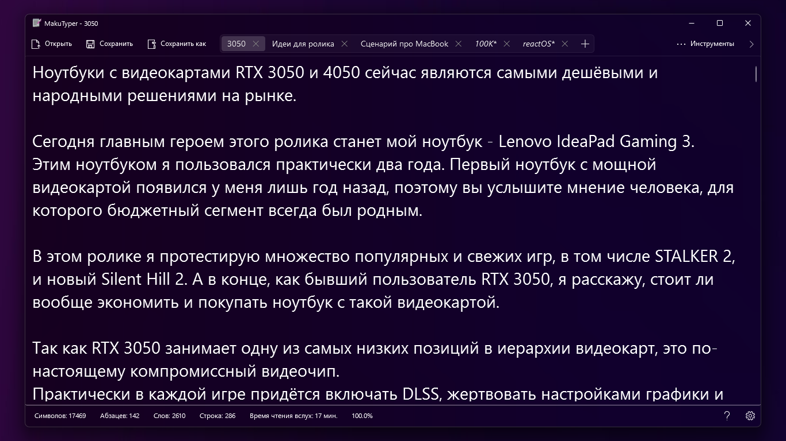
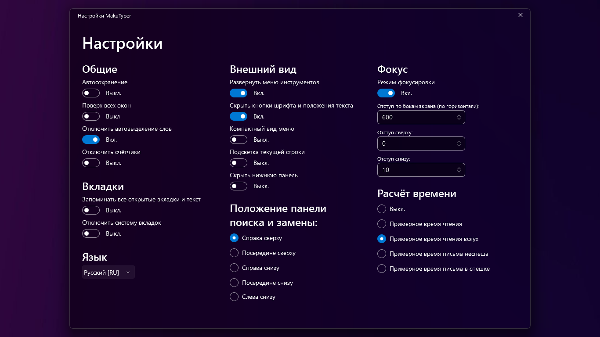

Adderly.Top
Adderly.Top
Скачать MakuTyper
Самый дружелюбный и полезный твикер для Windows.
В этой программе вы можете гибко настроить и персонализировать систему, а так же управлять процессами и посмотреть подробную информацию о характеристиках вашего ПК!
Также, вы можете выполнить быструю настройку Windows, управлять системными компонентами и избавиться от системного мусора!
В MakuTweaker доступно несколько тем оформления, благодаря которым вы можете настроить программу на свой вкус.

